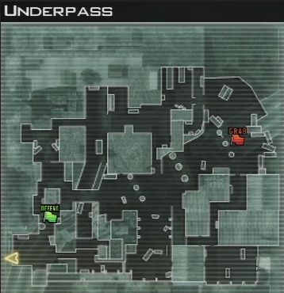
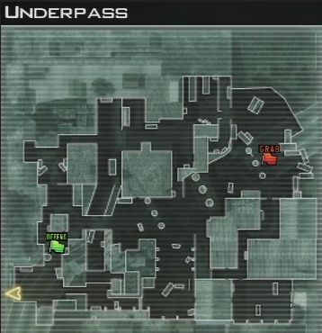

Mehrere Wege
Verzweigte Wege bringen den Spielern die Möglichkeit, sich zwischen verschiedenen Wegen das Ziel zu erreichen, zu entscheiden. Die Wahl zu haben, gibt den Spielern ein Gefühl der Macht.
Es werden Engpässe vermieden, welche den Spielfluss bremsen oder sogar zum Stillstand bringen könnten, sodass weder das eine noch das andere Team die Möglichkeit hat zu gewinnen. Durch ein übermäßiges verwenden dieses Pattern besteht die Gefahr, dass kaum noch Begegnungen zwischen den Spielern stattfinden.
In Multiplayer Spielen wie ``League of Legends'' oder ``Call of Duty'' werden viele Wege und Abzweigungen dafür genutzt um dynamischen Gameplay zwischen den Teams herbeizuführen. Wird das Pattern in diesem Fall nicht zum Einsatz kommen, sodass es nur noch einen Weg zwischen den beiden Teams gibt, wird das Tempo gedrosselt.